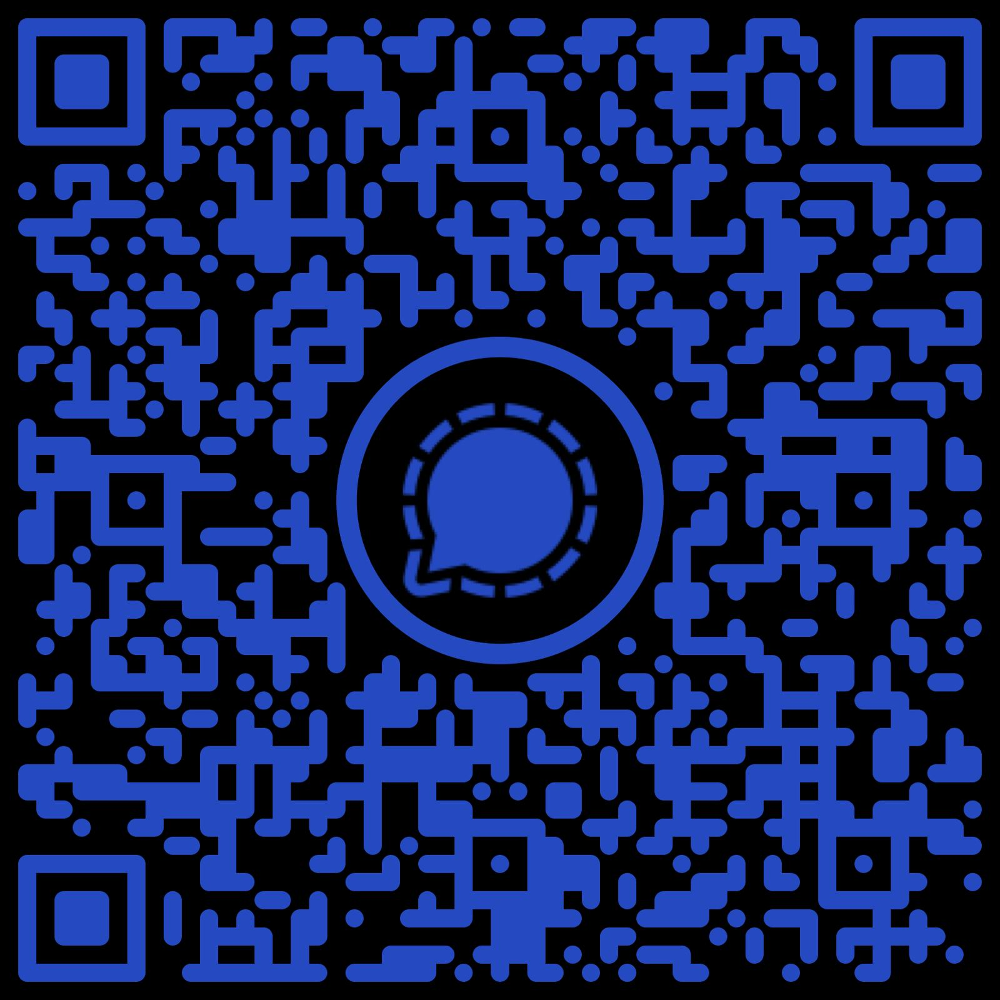

Collectief Activisme Groningen
Het systeem is niet stuk. Het doet precies waarvoor het gebouwd is: groeien ten koste van de omgeving, collectieve welvaart, en mensenrechten. Collectief Activisme wacht niet tot iemand het oplost: samen komen we verder. Met activisme en collectieve acties.
Op de hoogte blijven van acties in- en rondom Groningen?
Join het Signal-kanaalOnze boodschap
Genoeg leeggepompt, genoeg leeggezogen, genoeg mooie woorden. We komen in actie.
Kies een kant en doe mee. Begin vandaag al, want wij zijn met meer!
Wat doen wij?
- We verbinden verschillende activistische en collectieve groeperingen in Groningen.
- We organiseren verschillende keren per jaar demonstraties.
- We helpen je je activistische of collectieve boodschap te verspreiden.
Hulp nodig bij je demonstratie? We denken — maar vooral doen — met je mee:
- Podium en geluid
- Publieksbegeleiding
- Een goede spreker of contact met andere partijen
- Meer bereik via onze Signal-groep of een persbericht
- Meedenkkracht bij een vergunningsaanvraag
- Financiële ondersteuning
Neem gewoon contact op — ook als je je demonstratie nóg succesvoller wil maken.
Je kunt Collectief Activisme Groningen kennen van
- Groningen De Straat Op
- De Rode Lijn-demo in Groningen
- Demonstratie voor medemenselijkheid, democratie en mensenrechten
- Solidariteitsdemonstratie voor vluchtelingen
- Vliegeren voor Palestina
Contact
Wil je met ons samenwerken of heb je een vraag? Stuur een bericht via onze Signal-groep of e-mail (link hieronder).

Join de Signal-groep
E-mailadres: contact@collectiefactivisme050.nl